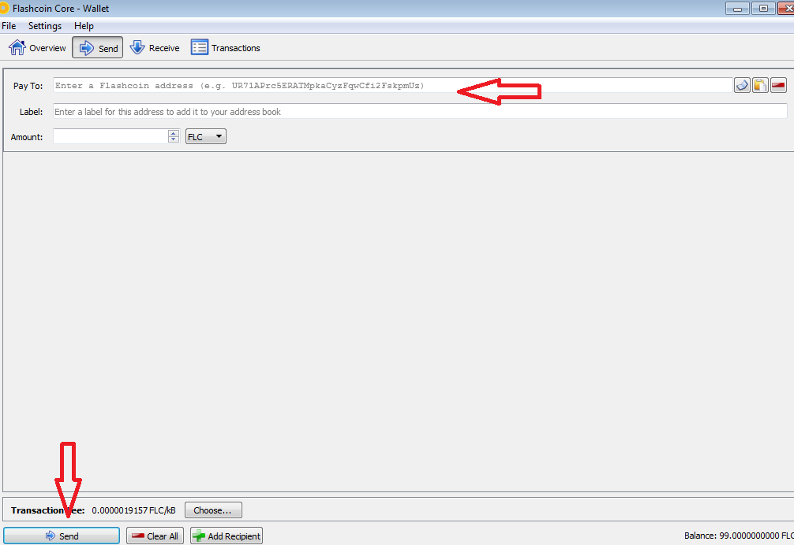
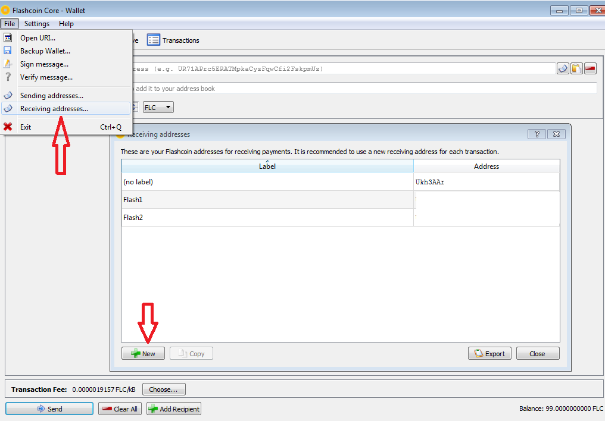

How to use FLASH QT Wallet
Flash QT Desktop Wallet
Install Core Wallet
-
Download the latest version of the Flash Coin Core Wallet (https://www.flashcoin.io/#qt-wallet).
Select the correct wallet for your OS (Operating System): Windows, Linux or OSX. - Run the Installer.
- You can use the default settings or change them to your liking.
- Click Install and then wait for the Core Wallet to install.
- Run the Flash Coin Core.
-
The wallet will take a while to sync and download the full blockchain.
However, you may speed up the process by manually downloading the Bootstrap.dat file as explained in the steps below.
Syncing the Wallet Quickly
- Stop the Wallet (most likely it is not running, so ignore “error: couldn’t connect to server”).
-
Open your Search bar on your desktop and type %appdata% then go into the Flashcoin folder.
(C:\Users\User_name\AppData\Roaming\Flashcoin)- Windows: ~/AppData/Flashcoin
- OSX: ~/Library/Application Support/ Flashcoin
- Linux: ~/.Flashcoin
- Delete the Blocks folder, Chainstate folder and peer.dat file.
-
Download the Flash Blockchain snapshot from the following link:
(https://flashcoin.io/download/flashcoin_blockchain_snapshot_23jan2018.tar.gz)Download WinRAR and install from the following link: https://winrar.en.softonic.com/
- Right click the Flashcoin Blockchain file you just downloaded (flashcoin_blockchain_snapshot_23jan2018.rar) and click extract. Extract the files to a known folder. In the extracted folder you will see Blocks, Chainstate, Database folders and Peers.dat in the new folder.
- Go to the %appdata% flashcoin folder you previously deleted the old files and copy and paste the 3 folders and peers.dat file to the flashcoin folder.
- You’re all done! The wallet should be accessible within 5-20 minutes, depending on how old the bootstrap is.
How to Encrypt your wallet
Always encrypt your wallet to keep your Flash Coin safe. Your private keys are saved in a file called wallet.dat in the Flashcoin folder. If you don’t encrypt your wallet, anyone with access to your PC can potentially steal your coins. Encrypting the wallet means you encrypt the wallet.dat file and keep your private keys safe! For sending Flash Coin, you will also need this password to unlock the wallet.
- Go to ‘Settings’
- Click ‘Encrypt Wallet’.
- Enter ‘New passphrase’ (use a strong password).
- Re-enter the passphrase.
- Write the passphrase down somewhere safe. Just make sure you do not forget it. Without the passphrase, your coins are lost.
- Click ‘OK’.
- Confirm that you want to encrypt the wallet.
- The wallet will now close.
- Restart the Core wallet.
Create Backup (Wallet.dat)
Always have multiple backups! A backup ensures you will not lose your coins if your desktop breaks. The wallet.dat file holds your private keys (see the ‘How to Encrypt your wallet’ section). With a backup of the wallet.dat file you can always restore your wallet.
- Open the Core Wallet.
- Click on File and select ‘Backup Wallet’.
- Select a location on your device to store the file.
- Rename the file to ‘wallet.dat’.
- Make multiple backups and store in multiple places. We recommend creating a backup on, for example, a USB drive or your phone.
Ask yourself, “If my PC crashes, do I still have a backup?”, “If my house burns down, do I still have a backup?”. If you can answer those questions with a yes, then you should be safe.
Restore Backup (Wallet.dat)
To use the wallet.dat backup file, you will need to import it into the wallet.
- Close the Core Wallet.
- Make a copy of the wallet.dat backup file.
-
Go to the Flash coin folder on your device (use the paths below if you have trouble locating it).
- Windows: ~/AppData/Flashcoin
- OSX: ~/Library/Application Support/ Flashcoin
- Linux: ~/.Flashcoin
- Delete the wallet.dat file in the Flash coin folder (make sure this file is from an empty wallet you do not want to use and/or want to replace).
- Paste the copy of your backup file into the Flash coin folder (make sure it’s called “wallet.dat”).
- Open the Core Wallet.
- Ensure the wallet is synced to view the correct balance.
Create Backup (Private Keys)
>
You can also get access to your coins by extracting the Private Keys. The private keys will give you access to your funds. Extract the Master Private Key and the Address Private Keys. Do not place them in a plain text file on your PC as anyone with access to the keys can potentially access your funds.
- Open the Core Wallet.
- Go to ‘Help’.
- Go to ‘Debug Window’.
- Go to ‘Console’.
- Unlock your wallet by entering your passphrase. The time is in seconds, so you can just enter 600 for 10 minutes.
- Dump the Master Private Key: “dumpmasterprivkey” and press *enter*.
- Dump the Address Private Keys: “dumpprivkey” and press *enter*
- Dump the Master Private Key: “dumpmasterprivkey” and press *enter*.
Repeat step 7 for all the private keys from the different wallet addresses in your wallet.
Keep the Private Keys somewhere safe!
Keep the Private Keys somewhere safe!
Restore Backup (Private Keys)
To use the Private Keys, you’ll need to import them into the Core Wallet.
- Open the Core Wallet.
- Go to ‘Help’.
- Go to ‘Debug Window’.
- Go to ‘Console’.
- Type: “importprivkey”.
- Hit *Enter* and the private key will be imported. It can take a few moments for the wallet to rescan the blockchain.
How to Send/Receive Flash Coins
Sending
- Make sure your wallet is currently synced.
- All Sent/Received Transactions can be viewed in the Transactions tab.
-
Go to the Send tab and enter the address you wish to send Flash coins to. Enter the amount of coins you wish to send and click the Send button at the bottom of the screen to complete the transaction.

Receiving
- Make sure your wallet is currently synced.
- Click the File drop down menu and then select Receiving addresses…
-
A new tab will open. Click on the New button to generate a new Flash address. This will be the address you can give to the sender to send Flash coins to your wallet.
-
It is recommended that before each transaction of receiving Flash coins that you generate a new address. This helps prevent your transactions from being tracked over time.
